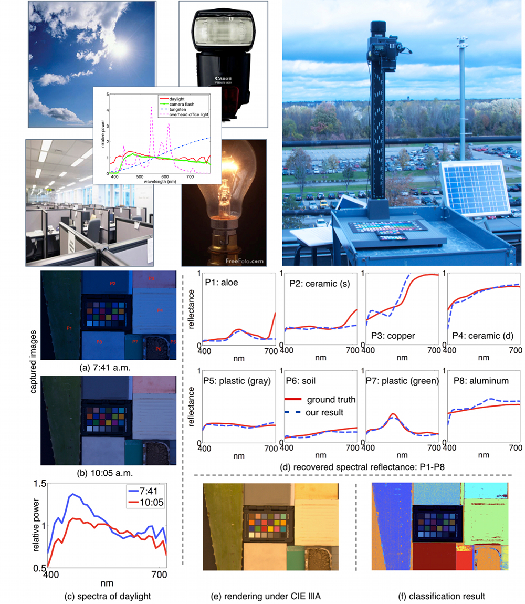
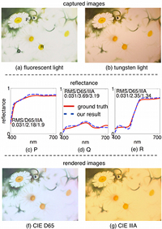
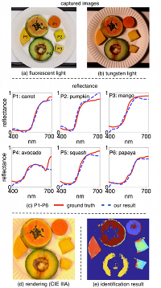
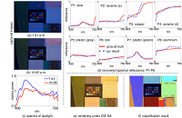
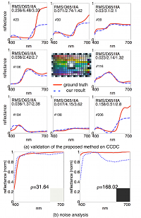

<html><head>
	<meta http-equiv="Content-Type" content="text/html; charset=iso-8859-1">
	<title>Recovering Spectral Reflectance under Commonly Available Lighting Conditions</title>
	<meta name="description" content="Recovering Spectral Reflectance under Commonly Available Lighting Conditions">
	<meta name="keyword" content="Computer Vision, Recovering Spectral Reflectance under Commonly Available Lighting Conditions">
	<link rel="stylesheet" href="../projects.css" type="text/css" />
</head>

<body bgcolor=#ffffff>
	<table width="982" height="100%"  border="0" cellpadding=0 cellspacing=0 align="center">
		<tr>
			<td width="59" rowspan="3" align="left" valign="baseline" background="../bkgnd/left_side.gif">&nbsp;</td>
			<td width="864" height="42" align="left" valign="baseline" background="../bkgnd/top_thin.gif"></td>
			<td width="59" rowspan="3" align="left" valign="baseline" background="../bkgnd/right_side.gif">&nbsp;</td>
		</tr>
		<tr>
			<td height="100%" align="left" valign="baseline" bgcolor="#ffffff">
			<div align="center"><table width="709"  border="0" cellspacing="30" cellpadding="0">
		
				<tr>
					<td><div align="center"><font size="+2">Recovering Spectral Reflectance under Commonly Available Lighting Conditions</font></div></td>
				</tr><tr>
						<td 
					><center></center></td></tr><tr><td>
	<p>
Recovering the spectral reflectance of a scene is important for scene
understanding. Previous approaches use either specialized filters or
controlled illumination where the extra hardware prevents many practical
applications.  In this paper, we propose a method that accurately
recovers spectral reflectance from two images taken with conventional
consumer cameras under commonly available lighting conditions, such as
daylight at different times over a day, camera flash and ambient light,
and fluorescent and tungsten light. Our approach does not require camera
spectral sensitivities or the spectra of the illumination, which makes
it easy to implement for a variety of practical applications. Based on
noise analysis, we also derive theoretical predictors that answer: (1)
which two lighting conditions lead to the most accurate spectral
recovery overall, and (2) for two given lighting conditions, which
spectral reflectance is more likely to be estimated accurately.  We
implement the method on a variety of cameras from high-end DSLRs to
cellphone cameras, and apply the recovered spectral reflectance for
several applications such as fine art reproduction, fruit
identification, and material classification. Both simulation and
experimental results demonstrate the effectiveness of the proposed
method.</p></td></tr>
				<tr>
					<td><h3 id="Publications">Publications</h3>
						<blockquote>
				<p>Jun Jiang and Jinwei Gu. <i><a 
	href='Jiang2012CVPRW.pdf'>Recovering Spectral Reflectance under
    Commonly Available Lighting Conditions</a></i>. CVPR 2012
    CCD.<br><p>Jun Jiang and Jinwei Gu.<i><a href='Jiang2012CVPRW_supp.pdf'>Supplementary 
	Document</a></i> (with other experimental details).<br>
						</blockquote>
					</td>
				</tr>
				
				<tr>
					<td align="left">
						<h3 id="Images">Images</h3>
				
						<table border="0" cellpadding="0" cellspacing="6">
				
						<tr>
							<td align="left" valign="middle" width="171"><a href="img/daisy.jpg"></a></td>
							<td align="left" valign="middle" width="10">&nbsp;</td>
							<td align="left" valign="middle" width="512">
								<strong>Spectral Recovery of Fine Art Painting:</strong>
								<p class="mediadescription">We recover the spectral reflectance of the oil painting
	‘Daisy’. (a) and (b) The captured images under the fluorescent light
	and the tungsten light. (c), (d) and (e) The reflectance estimated
	and measured at selected areas (P, Q and R) on the painting. (f) and
	(g) The rendered image under CIE D65 and IllA.</p>
							</td>
						</tr>
					
						<tr>
							<td align="left" valign="middle" width="171"><a href="img/fruits.png"></a></td>
							<td align="left" valign="middle" width="10">&nbsp;</td>
							<td align="left" valign="middle" width="512">
								<strong>Identification of Fruits:</strong>
								<p class="mediadescription">The spectral recovery and identification of fruits. Before the experiment, a
database was created by including measured reflectance of ten different
kinds of fruits. Next, we captured fruit under
the fluorescent light (a) and the tungsten light (b) by Canon 60D.
(c) The measured and estimated reflectance of each fruit. (d) The rendering of fruits under CIE IllA. The artifacts in green
	were due to the shadows in the captured images. (e) All fruits were identified correctly except the pumpkin (P2) and
	mango (P3), due to the very similarity of their
	reflectance. On the other hand, while being similar in color
	in (a) and (b), the squash (P5) was able to be
	distinguished from the pumpkin (P2) and mango (P3).
	The identification of fruits by the spectral information is robust to
the scene illuminant and to the distortion of the food shape during the
processing of food. In addition, if the spectral images of the fruits
at different times (g when they were ripe or rotten) are available, the
identification results can be useful as a quality control measure.</p>
							</td>
						</tr>
					
						<tr>
							<td align="left" valign="middle" width="171"><a href="img/outdoorMaterial.png"></a></td>
							<td align="left" valign="middle" width="10">&nbsp;</td>
							<td align="left" valign="middle" width="512">
								<strong>Classification of Outdoor Materials:</strong>
								<p class="mediadescription">We recover the spectral reflectance of outdoor materials under daylight. Based on the recovered reflectance, classifications 
of materials are made. (a) and (b) The captured pictures under daylight
	at 7:41 a.m. and 10:05 a.m. (c) The daylight spectra (normalized to be 1 at 560 nm). (d) The measured and
	estimated reflectance of the aloe, ceramic (the specular side),
	copper, ceramic (the diffuse side), gray plastic, soil, green
	plastic, and aluminum. (e) The rendering of the scene under CIE
	IllA. (f) All materials were classified (indicated by different colors). The ColorChecker Passport (CCP) was included to
	characterize the lighting.</p>
							</td>
						</tr>
					
						<tr>
							<td align="left" valign="middle" width="171"><a href="img/N900.png"></a></td>
							<td align="left" valign="middle" width="10">&nbsp;</td>
							<td align="left" valign="middle" width="512">
								<strong>Extension to Smartphone Camera: Nokia N900:</strong>
								<p class="mediadescription">Smartphones and other mobile platforms are gradually changing how we operate our daily life by integrating
both the eyes (the camera) and brain (the computing unit) on a cell phone.
While a handheld spectrophotometer can be used to measure the spectral reflectance of materials, the use of cell phone cameras has the benefit of lower cost
and acquisition of the scene reflectance rather than of a small uniform area on a surface.
We did an experiment to evaluate the spectral recovery performance of smartphones, Nokia N900, by validating CCDC. Moreover, the picture under one (rather than two) 
lighting condition was used to recover the scene reflectance.
The validation of CCDC using the camera phone, Nokia N900, under the tungsten light only. (a) The estimated and measured reflectance of certain patches in CCDC. 
The numbers on the top of each plot are the spectral RMS error, and color difference under CIE D65 and IllA. The patch index (\#) is shown as well. 
A close spectral and colorimetric match could be achieved generally between the ground truth and our results except for patches of reddish colors. 
(b) Noise analysis was performed by calculating $
ho$ to tell which reflectance is likely to be predicted better under the tungsten light. 
Two patches were selected with small and large $
ho$. A smaller $
ho$ means a better spectral match.


</p>
							</td>
						</tr>
					
						</table>
					</td>
				</tr>
				
				<tr>
					<td align="left"><h3 id="Slides">Slides</h3>
						<blockquote>
                            <p><a href="CVPR2012_CCD_POSTER.pdf">CVPR 2012 CCD Poster (PDF)</a></p>
						</blockquote>
					</td>
				</tr>
				
				<tr>
					<td align="left">
						<h3 id="Software">Software</h3>
						<blockquote>
				<p><a href="code.zip"><b>Code (including an
                        example)</b></a></p>The zip file includes a set
                of exemplar images and code to recover the spectral reflectance under commonly available lighting conditions.

						</blockquote>
					</td>
				</tr>
				
				<tr>
					<td align="left">
						<h3 id="Related Projects">Related Projects</h3>
						<blockquote>
				<p><a href="http://www.cs.columbia.edu/CAVE/projects/multispectral_imaging/">Multispectral Imaging Using Multiplexed Illumination</a></p>
<p><a href="http://www.art-si.org/">Multispectral Imaging on Fine Art Reproductions</a></p>

						</blockquote>
					</td>
				</tr>
				
